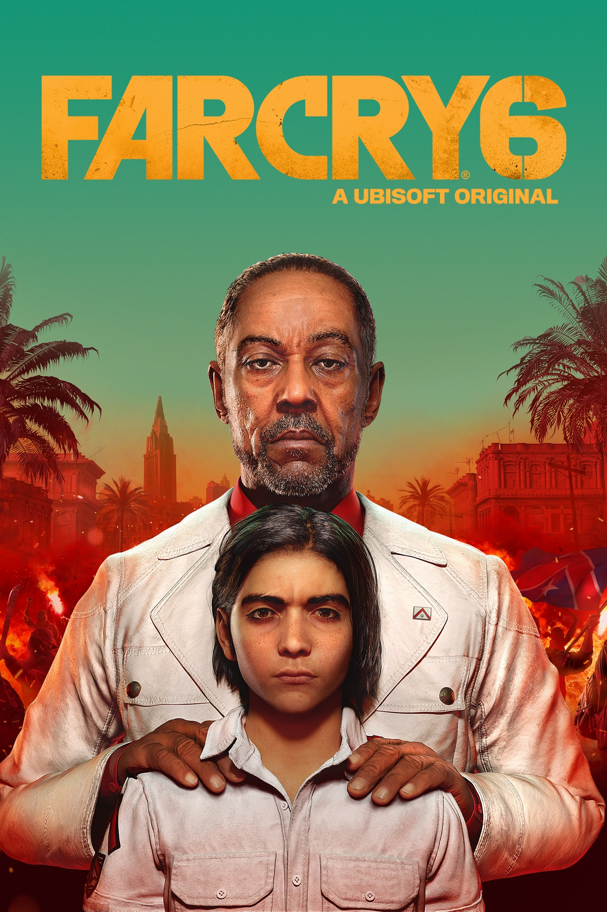
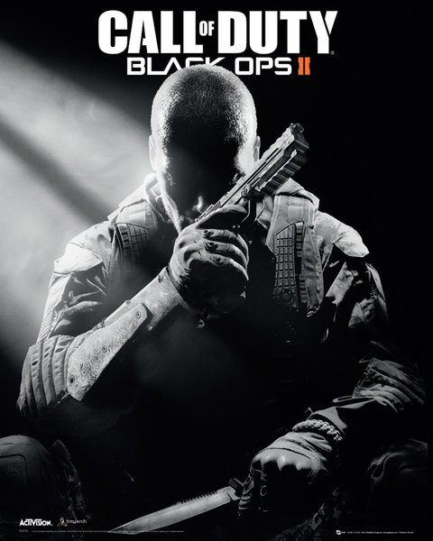

Battlefield V (2018) IMBd Rating: 6.0/10 ING Rating: 7.5/10 Lead your squad to victory with new ways to turn the battlefield to your advantage. This series goes back to its roots with a never-seen-before protrayal of World War 2. PLATFORMS:
PlayStation 4, Xbox one , and Microsoft Windows
Rainbow Six Siege (2015) IMDb Rating: 7.9/10 ING Rating: 8.5/10 Inspired by the reality of counter terriost operatives across the world, a team of soilders and militarists are recruited into an elite counter terrorism unit. Their objective was to fight terrorism across the globe. PLATFORMS: PlayStaion 4, Xbox One, Xbox series X and series S, PlayStation 5, and Microsoft Windows
TitanFall 2 (2016) IMBd Rating: 8.5/10 ING Rating: 9/10 A sequel to TitanFall, featuring multiplayer and for the first time a single-player campaign that puts you in the shoes of Jack Cooper, accompanied by a sentinent robot campanion. PLATFORMS: PlayStation 4, Xbox one, and Microsoft Windows
Overwatch (2016) IMBd Rating: 8.4/10 ING Rating: 10/10 A highly stylized team-based shooter set on a near-future earth. Bold characters with extraordinary abilities fight across fantastic yet familiar battlegrounds in an epic, globe-spanning conflict. PLATFORMS: PlayStation 4, Xbox one, Nintendo Switch and Microsoft Windows
DOOM (2016) IMBd Rating: 8.5/10 ING Rating: 7.1/10 On Mars, a massive research facility tapping energy from hell has been overwhelmed by demonic forces. As the last DOOM Slayer, you have been essurected to do one thing: to cleanse this world and send them back to where they came from. PLATFORMS: PlayStation 4, Xbox one, Nintendo Switch, and Microsoft Windows
Destiny (2014) IMBd Rating: N/A ING Rating: 7.8/10 You are a Guardian of the last safe city on Earth. Defend the city in an always-connected universe filled with action and adventure. PLATFORMS: PlayStation 3, PlasyStation 4, Xbox one, and Xbox 360
Counter Strike: Global Offensive (2012) IMBd Rating: 7.7/10 ING Rating: 8/10 A first-person team-based action game depicting death matches between terrorists and counter-terrorists. It features ew maps, characters, and weapons, and delivers updated versions of the classic CS content. PLATFORMS: PlayStation 3, Xbox one, Xbox 360, macOS, and Microsoft Windows
DOOM Eternal (2020) IMBd Rating: 8.7/10 ING Rating: 9/10 Experience the ultimate conbination of speed and power with the next leap in push-forward, first-person combat. In the sequel "DOOM", Hell has taken Earth, so it's up to the DOOM Slayer, the ultimate demon-killing machine created by a mystical force, to rip and tear the forces of Hell apart. However, he is not alone in this fight. PLATFORMS: PlayStation 4, PlayStation 5, Xbox one, Xbox Series X and Series S, Nintendo Switch, Google Stadia and Microsoft Windows
Destiny 2 (2017) IMBd Rating: 7.6/10 ING Rating: 8.5/10 Humanity's last safe city has fallen to an overwhelming invasion force, led by Ghaul, the imposing commander of the brutal Red Legion. He has stripped the city's Gaurdians of their power, and forced the survivors to flee. PLATFORMS: PlayStation 4, PlayStation 5, Xbox one, Xbox Series X and Series S, Google Stadia, and Microsoft Windows
SuperHot (2016) IMBd Rating: 7.6/10 ING Rating: 7.5/10 A unique first-person action game where time moves only when you move, the player must bash through villians making each level a deadly puzzle. PLATFORMS: PlayStation 4, Xbox one, Oculus Quest, Nintendo Switch, Google Stadia, and Microsoft Windows
TitanFall (2014) IMBd Rating: 7.4/10 ING Rating: 8.9/10 A science-fiction shooter game set in a distant frontier torn apart by war where small vs. giant, natural vs. industrial, and man vs. robot fight. Titanfall gives players the freedom to switch bewteen fighting as an elite assult Pilots or agile, heavily armored, 24-foot tall Titans. PLATFORMS: PlayStation 4, PlayStation 5, Xbox one, Xbox 360, Xbox Series S and Series X, and Microsoft Windows
Halo Infinite (2021) IMBd Rating: 8.4/10 ING Rating: 9/10 When all hope is lost and humanity's fate hangs in the balance, Master Chief is ready to confront the most ruthless foe he's ever faced. PLATFORMS: Xbox one, Xbox Series S and Series X, and Microsoft Windows
Battlefield 1 (2016) IMBd Rating: 8.2/10 ING Rating: 9/10 Fight your way through the history of warfare to World War 1 in this epic entry into the first-person shooter franchise. Experience large-scale battles as infantry or piloting vehicles on land, air and sea, from the tanks to bikes on the ground, to bi-planes and gigantic battleships. Through ever-changing environments at the dawn of all-out war, no battle is ever the same. PLATFORMS: PlayStation 4, Xbox one, and Microsoft Windows
Far Cry 3 (2012) IMBd Rating: 8.9/10 ING Rating: 9/10 While skydiving, Jason Brody, and his friends find themselves stranded on a tropical island, a lawless places ruled by privacy, human misery, and pirates. You dictate how the story unfolds, from the battles you choose to fight down to the allies or enemies you make along the way. PLATFORMS: PlayStation 3, PlayStation 4, Xbox one, Xbox 360, and Microsoft Windows
Far Cry 4 (2014) IMBd Rating: 8.1/10 ING Rating: 8.5/10 To fullfill his mother's dyig wish, Ajay Ghale travels to Kyrat to scatter her ashes. Before he can accomplish this, though, he must end a civil war between the Golden Path and Min's Forces. PLATFORMS: PlayStation 3, PlayStation 4, Xbox one, Xbox 360, and Microsoft Windows

Far Cry 6 (2021) IMBd Rating: 7.8/10 ING Rating: 8/10 A adrenaline-filled world that thrusts players in the modern-day guerrilla revolution. As dictator of Yara, Anton Castillo, is intent on restoring his nation back to its former glory by any means, with his son, Diego following his bloody footsteps.Become a guerrilla fighter and burn their regime to the ground. PLATFORMS: PlayStation 4, PlayStation 5, Xbox one, Xbox Series X and Series S, Google stadia, and Microsoft Windows
Bioshock Infinite (2013) IMBd Rating: 9.1/10 ING Rating: 9.4/10 A man is sent to the flying city of Colombia to find a missing girl. However, upon arrival he discovers that the city, its people, and his objective are all not what they seem. PLATFORMS: PlayStation 3, Xbox 360, Nintendo Switch, macOS, and Microsoft Windows

COD: Black Ops 2 (2012) IMBd Rating: 8.0/10 ING Rating: 9.3/10 Set in 2025, new unmanned machines have been taken over by Nicaraguan terrorist, Raul Menendez, forcing the U.S.A to take action. PLATFORMS: PlayStation 3, Xbox 360, Wii U, and Microsoft Windows